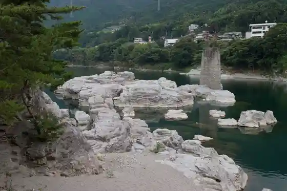
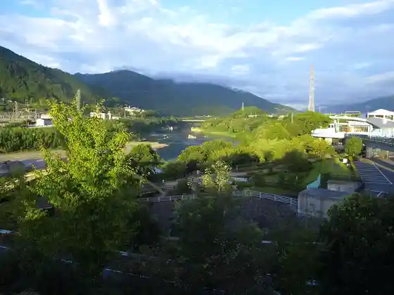
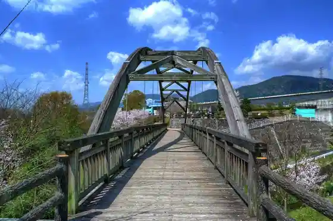
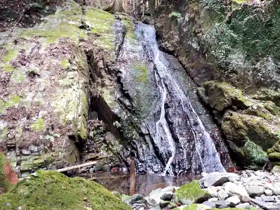

Kamo no Dai Kusu
Higashimiyoshi, Tokushima · Official / source link
Mino Ta no Fuchi
Higashimiyoshi, Tokushima · Official / source link

Yoshinogawa Haiueioashisu
Higashimiyoshi, Tokushima · Official / source link

Mino Ta no Fuchi Kyanpu Village
Higashimiyoshi, Tokushima · Official / source link

Shintsu Falls
Higashimiyoshi, Tokushima · Official / source link

Kamo Shrine
Higashimiyoshi, Tokushima · Official / source link
Ma Iori
Higashimiyoshi, Tokushima · Official / source link
Ohanaudon
Higashimiyoshi, Tokushima · Official / source link
Tezukuri Jierato no Mise Pokoapoko
Higashimiyoshi, Tokushima · Official / source link
Daikokuya
Higashimiyoshi, Tokushima · Official / source link
Cha Kura
Higashimiyoshi, Tokushima · Official / source link
Hoju Shi
Higashimiyoshi, Tokushima · Official / source link
Taoka Udon
Higashimiyoshi, Tokushima · Official / source link
Yakitori Ichiban
Higashimiyoshi, Tokushima · Official / source link
Ashiroya
Higashimiyoshi, Tokushima · Official / source link
Mikamo Kissa
Higashimiyoshi, Tokushima · Official / source link
Hone Tsuki Niwatori Mikamo no Dai Chan
Higashimiyoshi, Tokushima · Official / source link
Sangatsu Ta
Higashimiyoshi, Tokushima · Official / source link
Buburu Park Mikamo
Higashimiyoshi, Tokushima · 0883-79-5339 · Official / source link
Masukawa Warai Raku Ko
Higashimiyoshi, Tokushima · Official / source link
Yoshinogawa Haiueioashisu Nosambutsu Chokubai Tokoro
Higashimiyoshi, Tokushima · Official / source link
Yoshinogawa Haiueioashisu Fureai City
Higashimiyoshi, Tokushima · Official / source link
Mikamo Someka Bo
Higashimiyoshi, Tokushima · 0883-79-5339 · Official / source link
Yoshinogawa Terewakuofisu (YTO)
Higashimiyoshi, Tokushima · 0883-87-9650 · Official / source link